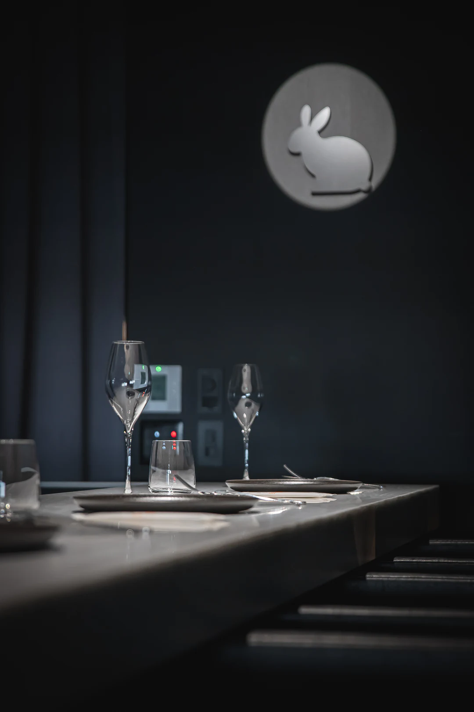
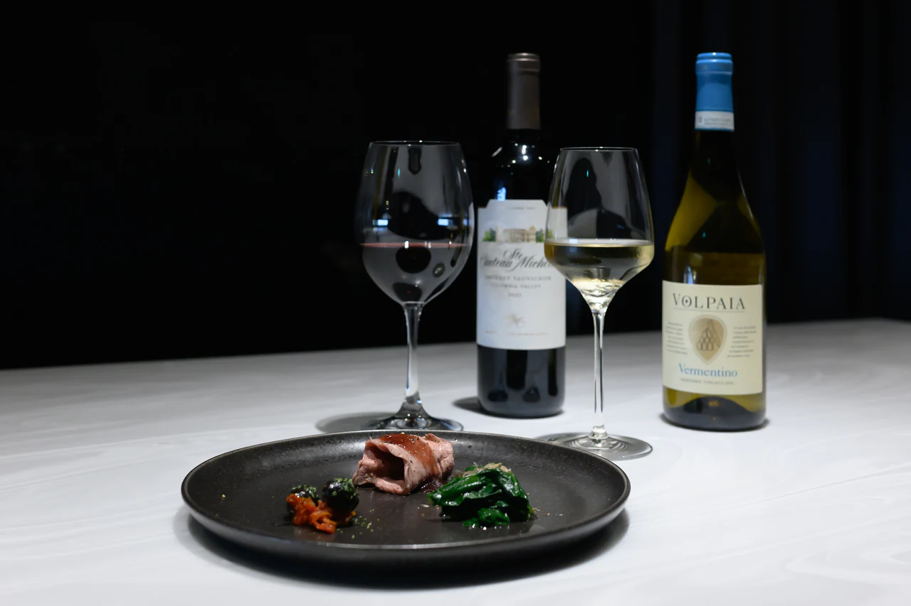
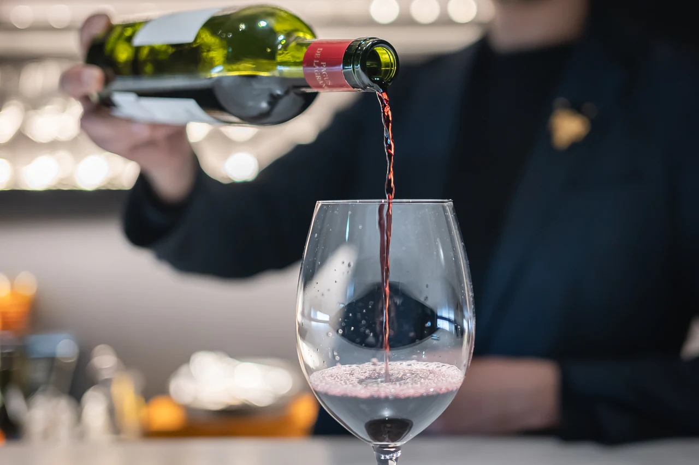
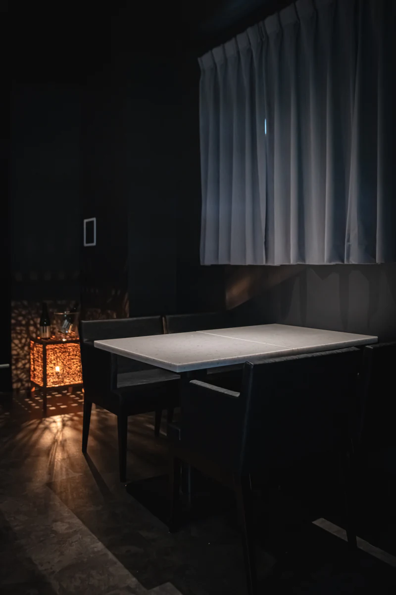
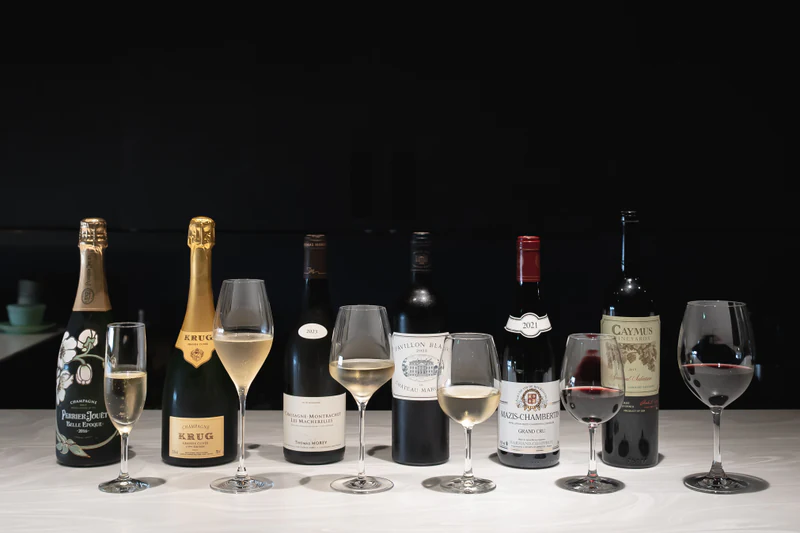
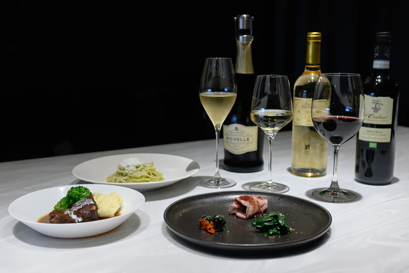
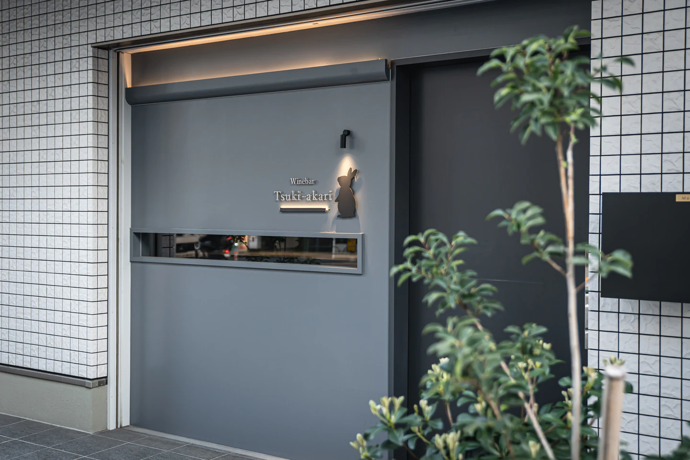

香水・香りについて
ワインの繊細な香りをお楽しみいただくため、香水や香りの強い整髪料などのご使用はお控えください。
A quiet connection
ワイン、料理、人、音楽、そして空間。
それぞれが主張しすぎることなく、静かにつながる場所。
湯島の小さなワインバー、Tsuki-akari。
一杯の味わいと会話の間に生まれる余白まで、大切にしています。


Curated for the moment
産地や知名度だけにとらわれず、造り手の哲学や個性を感じるワインを。
季節の食材を生かした料理とともに、香りや味わいの重なりをお楽しみください。
日々変わるラインナップの中から、新しいワインとの出会いを。
ボトルワインもご用意しております。
チャージにはウェルカムドリンクとおつまみが含まれます。
表示価格は税込です。
First Visit
ワインに詳しくなくても、
どうぞ気兼ねなくお越しください。
「軽やかなものを」
「今日は少し特別な一本を」
お好みやご予算を伺いながら、
ソムリエがご提案いたします。
その日の気分も、どうぞお聞かせください。
お一人でも、カウンターで一杯からお楽しみいただけます。
ご友人との語らいや、お一人で過ごす夜にも。
どうぞ気兼ねなくお立ち寄りください。

Shaping an evening
飲食プロデューサー / ソムリエ
J.S.A.認定ワインエキスパート。元プロギタリストとして磨いた感性と構成力を、ワイン選定、ペアリング、接客、空間づくりに活かしています。
ワインコミュニティ「CAMOS TOKYO」元運営責任者。
Official WebsiteScenes from Tsuki-akari



Follow our evenings
Before your visit
もちろんです。お好みを伺い、ソムリエがご提案します。
はい。お一人でのご来店も歓迎しております。
はい。グラスワイン一杯からお楽しみいただけます。
お席に限りがございますので、事前のご予約をおすすめしております。
香水や香りの強い整髪料はお控えください。詳しくはご利用案内をご覧ください。
For a quiet evening
ワインの香りと心地よい空間を皆さまで楽しむため、以下のご協力をお願いいたします。
ワインの繊細な香りをお楽しみいただくため、香水や香りの強い整髪料などのご使用はお控えください。
店内での長時間のPC作業、オンラインミーティング等はご遠慮いただいております。
店内での通話や、音の出る状態での動画・音楽の再生はお控えください。
撮影の際は、他のお客様やスタッフが映り込まないようご配慮ください。
長時間・大規模な撮影はご遠慮ください。
大きな声での会話など、他のお客様のご迷惑となる行為はお控えください。
Visit us
ご来店前に最新情報をご確認ください。
